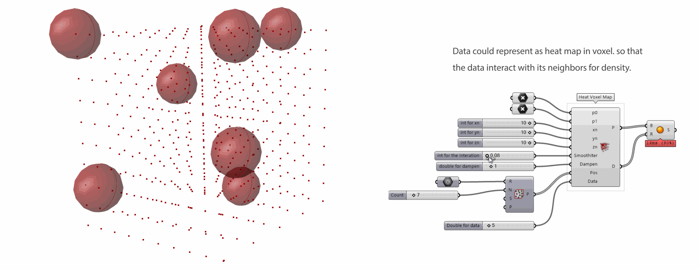

Implementation
Numerical Urban Utility Add On is a type of implementation in Grasshopper as an urban mobility analysis tool for designers. While designing urban, designer frequently need to analyze urban mobility based on existing condition. This add on calculates and provides with general properties of the mobility and places quickly and easily to accelerate design thinking. Numerical Urban Utility consists of three parts, 1: Urban Graph 2: mobility computing, and 3: visualization.
Data structure for manipulation
In order to process more complex data than one datum internally, a proper data structure is necessary. Unlike the well know data array such SQL (Structured Query Language) as Tabular matrix like CSV (Comma Separated Values), TSV (Tab Separated Values), or such NoSQL (No Structured Query Language) as JSON (JavaScript Object Notation) or graph structure, a data structure should be interactive and computable with its data sets and neighbor, childern or connected data sets as efficient as possible.
Data Processing :
To process the data for Mobility Energy Consumption, it is important to integrate a data streucture with data which is related to urban mobility energy. there are two data structures(pixel and graph data structure) where individual data are populated and calculated.Pixel data structure is a matrix, discretizing a urban or district into a finite setting for analysis, in which each pixel has the relationship with its neighbors, and each one computes its own data on the basis of neighbors’ settings, so that urban data can be naturally addressed and computed in spatial context.
Pixel Structure :
Pixel Data structure based on two-dimension matrix array consists of individual pixel which contain diverse data internally. As a parent of each pixel in the hierarchy, the pixel structure governs and controls computing and emerging the new data by processing not only its child pixel but also its neighbors. Just like image processing, the data affect their neighbors based on given algorisms so that the effect of data in the given relationships appear and emerge new pattern of data.
example: data blending in pixel structure
Graph Structure :
As a similar technic, Graph data structure could be deployed. Graph structure is mathematical objects that consist of nodes and edges, and are widely used to represent relational data structures. The street network of urban, street, highway or the subway map are examples of objects whose graphs closely resemble their physical form. Thus, the structure will deploy to process urban data in spatial relationships in order to compute Mobility Energy Consumption.


example: Graph interacting with computing data in each nodes, and visualizing its path from a node to a node

example: Graph interacting with orphan nodes computing internal data based on the change
Numerical Urban Utility


Pixel Heatmap

Voxel Heatmap
